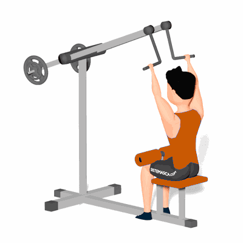

Puxada Alta Articulada Alternada

Este exercício tem como objetivo o fortalecimento e hipertrofia dos músculos das costas, com ênfase nos músculos dorsal e trapézio.
Ficha Técnica
Tipo: Musculação
Grupo Muscular: Costas
Aparelho: Nenhum
Músculos: Nenhum
Como realizar
- Sente-se no aparelho;
- Segure nos pegadores com as palmas das mãos voltadas para a frente (pegada pronada);
- O afastamento entre as mãos deverá ser um pouco maior do que a largura dos ombros;
- Incline o tronco levemente para trás;
- Puxe um pegador em direção a parte superior do peitoral, até a altura do peito;
- Retorne o pegador à posição inicial;
- Repita o movimento alternando os pegadores.
 RC STORE
RC STORE